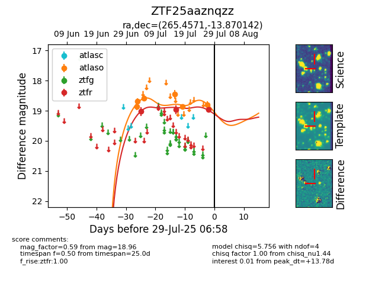

Target ZTF25aaznqzz at 2025-07-29 06:58, see:
FINK: fink-portal.org/ZTF25aaznqzz
Lasair: lasair-ztf.lsst.ac.uk/objects/ZTF25aaznqzz
ALeRCE: alerce.online/object/ZTF25aaznqzz
alt names
ZTF25aaznqzz (ztf,fink)
coordinates:
equatorial (ra, dec) = (265.4571,-13.87014)
galactic (l, b) = (12.4655,+8.57518)
photometry
last atlaso=18.80, ztfr=18.96
6 atlaso, 3 ztfr detections
